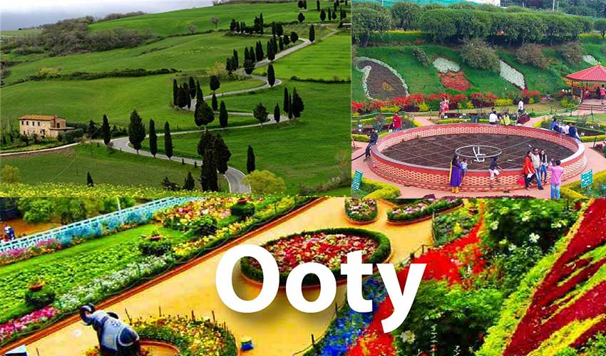
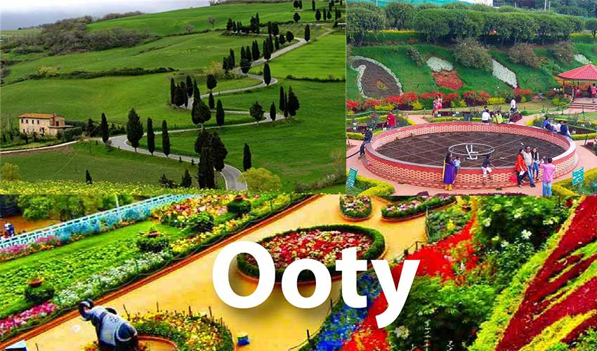
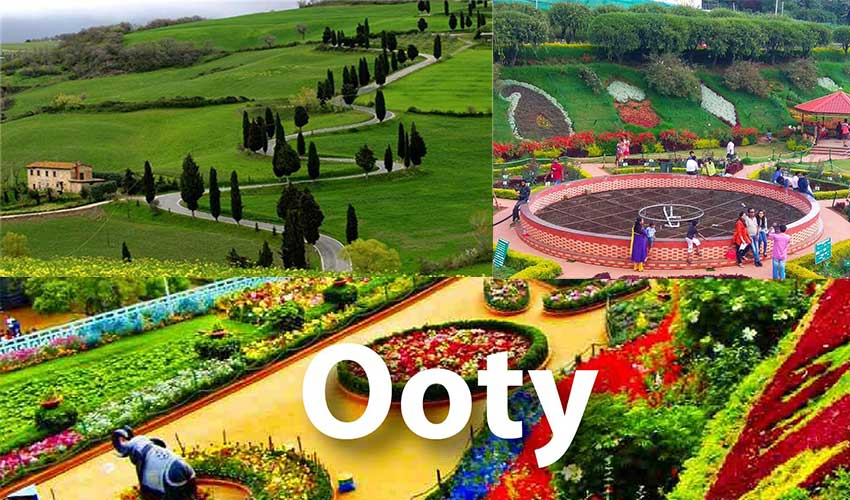

Ooty (abbreviated as Udhagai), is a town and a municipality in the Nilgiris district of the Indian state of Tamil Nadu. It is located 86 km (53 mi) north west of Coimbatore and is the headquarters of the Nilgiris district. Located in the Nilgiri Hills, it is known as the "Queen of Hill Stations" and is a popular tourist destination. Originally occupied by the Toda people, the area came under the rule of the East India Company in the 18th century. It later served as the summer capital of the Madras Presidency. The economy is based on hospitality industry serving tourism and agriculture. The town is connected to the plains by the Nilgiri ghat roads and Nilgiri Mountain Railway.
